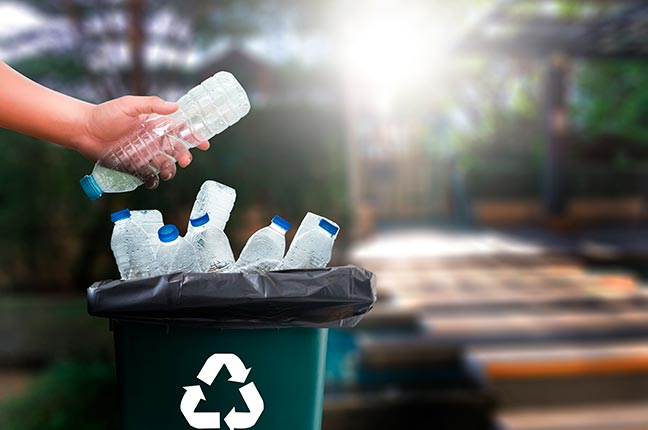

A reciclagem ajuda a diminuir gastos nas gestões pública e privada. As prefeituras economizam com limpeza urbana, na construção de aterros sanitários e no tratamento de doenças. Já as indústrias economizam energia elétrica necessária para fazer novos produtos a partir de matéria-prima bruta.
Bem-vindo à Página de Reciclagem
A reciclagem desempenha um papel crucial na preservação do meio ambiente e na redução do impacto ambiental negativo. Nesta página, exploraremos diversos aspectos da reciclagem.
Os tópicos que serão cobertos incluem:
Clique nos links acima para aprender mais sobre cada tópico. Junte-se a nós na jornada para um mundo mais sustentável!
×


O processo de reciclagem começa pela separação dos resíduos pelo seu produtor, passando por um bom gerenciamento da limpeza urbana e terminando nas usinas de reciclagem, onde o material reaproveitável será transformado em nova matéria-prima. Além de preservar o meio ambiente, gera renda.
O processo de reciclagem começa pela separação dos resíduos pelo seu produtor, passando por um bom gerenciamento da limpeza urbana e terminando nas usinas de reciclagem, onde o material reaproveitável será transformado em nova matéria-prima. Além de preservar o meio ambiente, gera renda.
O processo de reciclagem começa pela separação dos resíduos pelo seu produtor, passando por um bom gerenciamento da limpeza urbana e terminando nas usinas de reciclagem, onde o material reaproveitável será transformado em nova matéria-prima. Além de preservar o meio ambiente, gera renda.
A quantidade de lixo produzida pelas atividades humanas já é um problema mundial. Notícias sobre o impacto dos plásticos no meio ambiente, principalmente na vida de animais marinhos, são frequentes. Uma das soluções mais importantes para esse problema é a reciclagem. Alguns materiais demoram centenas de anos para se decompor, por isso, a conscientização sobre seu consumo, uso, reaproveitamento e descarte adequado é essencial para construir uma sociedade sustentável. Apesar de as políticas públicas terem um papel fundamental nesse assunto, você também pode contribuir com a mudança de alguns hábitos. O descarte adequado do lixo e o apoio a cooperativas de reciclagem são algumas ações que todos podem fazer em sua comunidade.